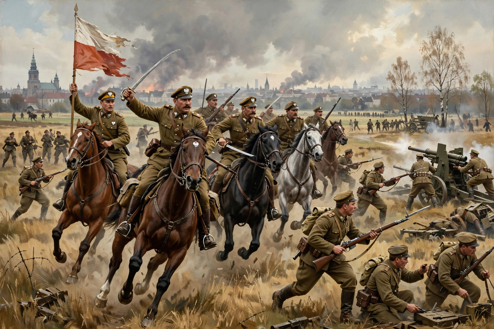

The Polish–Soviet War (1919–1921) was fought primarily between the Second Polish Republic and the Russian Soviet Federative Socialist Republic over control of territories in present-day Ukraine and Belarus following World War I.
| Polish–Soviet War | |
|---|---|
 | |
| Date | 1919 – 18 March 1921 |
| Result | Polish victory; Treaty of Riga |
| Commanders | Józef Piłsudski; Leon Trotsky, Mikhail Tukhachevsky |
After clashes in 1919, Poland's Kyiv offensive (1920) was reversed by a Soviet counteroffensive reaching Warsaw. Poland's victory at the Battle of Warsaw — the “Miracle on the Vistula” — and at Komarów and the Niemen turned the war.
The Peace of Riga (1921) split Ukraine and Belarus between Poland and the Soviets, ending Józef Piłsudski's federation plans.